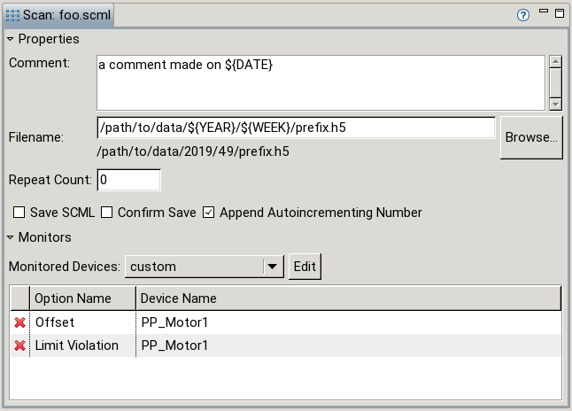
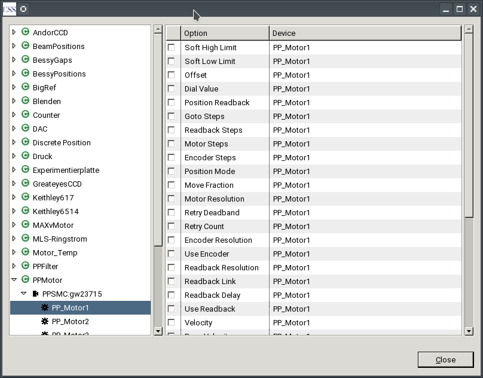

The Scan View contains properties concerning the whole scan. The scan shown is the one selected in the Scan Description Editor (the currently visible Tab).
For a scan a comment, the filename where the data should be saved to, the number of times the scan should be executed in addition to the first and additional save options can be set. The currently active monitors are shown in a table and can be altered via an interface in a separate dialog.

The properties are described in detail below.
A descriptive text can be saved in the comment. It appears as an attribute in the data file. Macro replacement is available. To see which macros are available see the tooltip text.
The filename is the location where the data should be saved to. The folder can either be set manually or selected via file dialog (Browse button). Macro replacement is available. To see which macros are available see the tooltip text. A preview of the result is shown below the text field.
The Repeat Count sets how often the scan should be executed in addition to the first execution. For Example a Repeat Count of 1 would execute the scan one additional time after the first run. Possible values are integers in [0, 1, ..., 999999].
Save Scan-Description defines whether the scan description should be saved along with the data. The H5 file with embedded SCML can be opened by the editor and viewer like a SCML file. To extract the data file manually see here.
Confirm Save defines whether the user has to confirm that the data should be saved after execution. If „no” is selected no data is saved!
Append Autoincrementing Number indicates whether a five digit number should be appened to the filename (before the suffix). The chosen number is the largest number found (filename<number>.h5) plus 1.
Alongside the devices which are used in a scan additional devices of interest could be monitored (its inital value as well as each change is written to the data file). The Scan View offers four types of monitoring:
monitor=true in the device definition are monitoredmonitor=true are monitoredWhen clicking the Edit button a dialog opens where options can be selected for monitoring:

The Dialog contains two parts. On the left there is a tree containing the devices of the device definition ordered by class. The contents of the table on the right depends on the selection in the tree. Multiple selections are possible (using shift click).